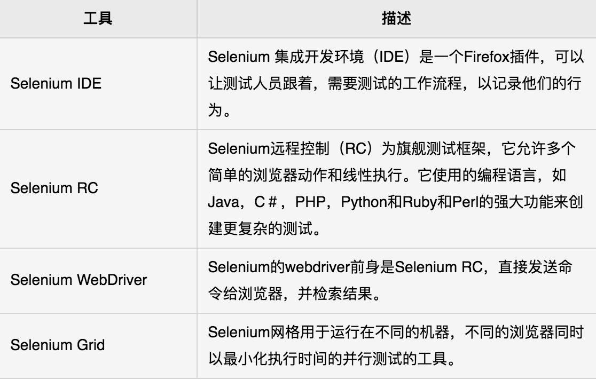
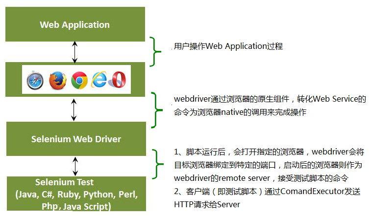

2 selenium的工作原理
Selenium是一个用于Web应用程序测试的工具，支持多平台、多浏览器、多语言去实现自动化测试，Selenium2将浏览器原生的API封装成WebDriver API，可以直接操作浏览器页面里的元素，甚至操作浏览器本身（截屏，窗口大小，启动，关闭，安装插件，配置证书之类的）,所以就像真正的用户在操作一样。
1.selenium2整体组件

2.webdriver组件的介绍
webdriver自动化俗称Selenium 2.0测试Web应用程序工具。 webdriver使用不同的底层框架，Selenium 遥控器使用JavaScript的Selenium 核嵌入式已经在有一定的局限性的浏览器中。 webdriver直接交互而不与Selenium 远程控制，依赖于服务器上的任何中介的浏览器。它是用在以下方面：在Selenium开发者社区努力下，不断提高Selenium webdriver与Selenium的整合。
- MULT浏览器测试，包括对不能很好地支持Selenium的远程控制浏览器改进的功能(硒1.0)
- 处理多个帧，多个浏览器窗口，弹出窗口和警报。
- 复杂的页面导航。
- 高级用户导航，如拖动和拖放。
- 基于AJAX的UI元素
3.Selenium VS Webdriver

4.Webdriver的一个简单的架构图，如下图所示：

Selenium2原理(扩展阅读)
webdriver是按照server–client的经典设计模式设计的:
server端就是remote server，可以是任意的浏览器：我们的脚本启动浏览器后，该浏览器就是remote server，它的职责就是等待client发送请求并做出相应；
client端简单说来就是我们的测试代码：们测试代码中的一些行为，比如打开浏览器，转跳到特定的url等操作是以http请求的方式发送给被server端（也就是被测浏览器）server接受请求，并执行相应操作，并在response中返回执行状态、返回值等信息；
Sever端需要依赖原生的浏览器组件，转化Web Service的命令为浏览器native的调用来完成操作。
注：
the WebDriver Wire Protocol是Selenium自己设计定义的协议，这套协议非常之强大，几乎可以操作浏览器做任
何事情，包括打开、关闭、最大化、最小化、元素定位、元素点击、上传文件等。WebDriver Wire协议是通用的，也
就是说不管FirefoxDriver还是ChromeDriver，启动之后都会在某一个端口启动基于这套协议的Web Service。